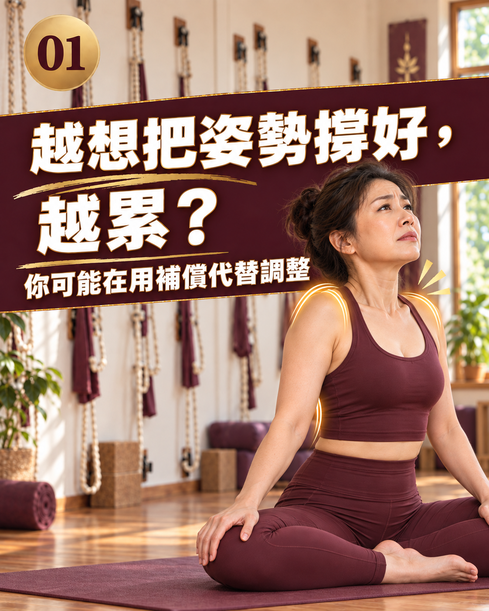

AI 體態檢測判斷文系列

越想把姿勢撐好，越累？你可能在用補償代替調整
- 越想挺直越累，可以先減少刻意固定身體的要求，不用立刻判定自己核心弱或有代償。
- 觀察是哪個提醒之後開始費力，以及能否呼吸、換位置、做完當下活動。
- 照片角度不能直接分辨出力好壞；把感受說清楚，比一直追求同一個外觀更有用。
「肩往後、肚子收緊、腰再挺一點。」每個提醒你都照做，最後卻只想放掉。你也許不是不願意調整，而是還不清楚，怎樣的位置和用力程度比較適合現在的活動。這篇先從你的感受談起，不用先給身體貼上代償的標籤。
挺直後的疲勞，是線索，不是診斷
刻意夾肩、憋氣或固定腰部時，你可能覺得更費力。這可以拿來和老師討論，但不能反過來證明原本一定有哪條肌肉不參與，也不能用不到幾分鐘就累的時間，判定自己是否正常。不同活動本來就有不同負荷。
「補償」這個詞，先當作動作描述來理解
一般練習對話中，有時會用補償描述為了完成某個動作而改用另一種方式。它不是看到肩膀高一點就能確診的疾病，也不代表身體哪裡壞掉。若老師用了這個詞，你可以問：「您觀察到的是哪個動作？還需要確認什麼？」
先找出是哪個提醒讓你開始硬撐
例如，一聽到挺胸就把肩胛夾緊；收小腹時忘了呼吸；坐直時只想到往前頂腰。你可以先少做一點那個刻意的用力，再看看是否比較能掌握動作。這是整理經驗，不是用幾個動作測出病因。若出現疼痛或不舒服增加，不必硬做下去。
把呼吸、活動與環境一起放進來看
你是否可以說話與自然呼吸？能否在需要時轉身、伸手或換位置？桌面太遠、腳沒有適合的支撐，是否讓你一直得伸著身體？CUH 的坐姿與人體工學資訊提醒，久留同一位置與環境安排都值得留意；不用把注意力全放在自己有沒有坐得夠直。
「我一照著＿＿提醒做，＿＿就開始很費力。能不能少做一點、換個支撐，或用另一種方式說明？」
有左右差異，不代表要立刻扳成對稱
站著時偶爾換重心、活動時左右感覺不同，不能單憑外觀判定原因。先說出差異出現在哪件事，再討論是否需要觀察動作或調整安排。如果主要困擾是平常反覆緊，可看肩頸反覆緊時的下一步分流。
檢測能補一張站姿畫面，不能替你量出費力程度
影像角度可以幫助討論拍攝當下的位置，但無法直接知道你用了多少力、哪裡太弱，或動作中的負荷是否適合。若你只是想問一個動作怎麼做，可以先詢問老師，不需要把付費檢測當成所有練習的前提。檢測報告的用途與限制可先讀。
讓下一次調整更具體，不用要求自己整天做好
選一個最容易開始硬撐的時刻，記下原本的提醒、實際感受，以及你想問的問題。若課堂上難以跟上，可以詢問幅度或課型選擇；若症狀持續或加劇、出現麻木無力等狀況，先尋求醫療專業協助。
看懂身體狀態，再決定下一步
想確認自己適合上課、調整，還是先做檢測？
首次到店 AI 體態檢測原價 NT$699，首次體驗 NT$299。約 20 分鐘，包含現場拍攝、姿勢角度分析與老師當面解讀。
預約首次 NT$299 AI 體態檢測常見問題
越挺越累，就是核心太弱或代償嗎？
不能這樣判定。用力、疲勞與不舒服是觀察線索，不足以診斷哪個部位失能或是哪條肌肉太弱。
好姿勢需要整天收腹、夾肩嗎？
不需要把自己固定在一個姿勢。留意是否能自然呼吸、改變位置與完成當下活動，必要時調整環境或動作要求。
怎麼把硬撐的感覺告訴老師？
描述是哪個提醒、哪個動作之後開始費力，以及有沒有憋氣、疼痛或動作受限，詢問是否能減小幅度、增加支撐或換種說明。
站姿照片可以分辨我是不是在硬撐嗎？
照片只能提供拍攝當下的位置與角度參考，不能直接測量肌力、耗力程度或活動中的力量分配，需要另外了解你的感受與實際動作。
調整姿勢後一直更不舒服，還要繼續撐嗎？
不要為了看起來直就持續加碼。先停止讓症狀加劇的做法；若不適持續、加重或影響日常，應尋求醫療專業評估。